Fotomonitoreo nacional para conocer, conservar y conectar la biodiversidad del Perú.
Snapshot Perú es una iniciativa colaborativa orientada a integrar datos de cámaras trampa a nivel nacional para fortalecer el monitoreo de mamíferos terrestres, apoyar la toma de decisiones en conservación y promover estándares comunes de fotomonitoreo en el país.
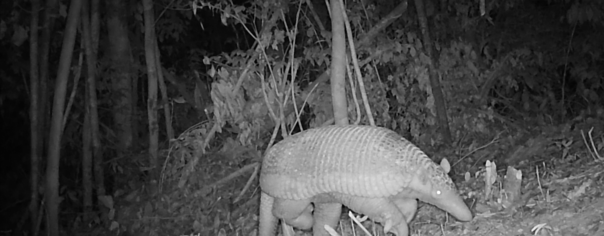
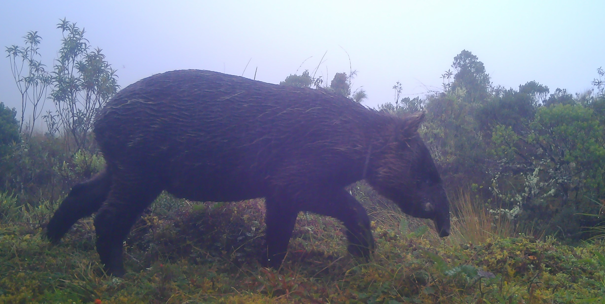
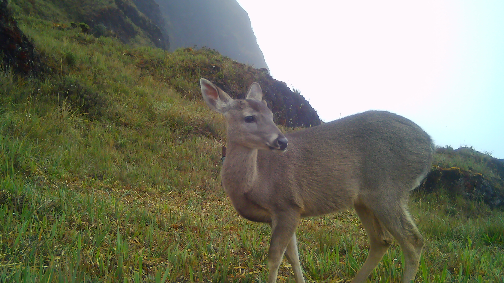
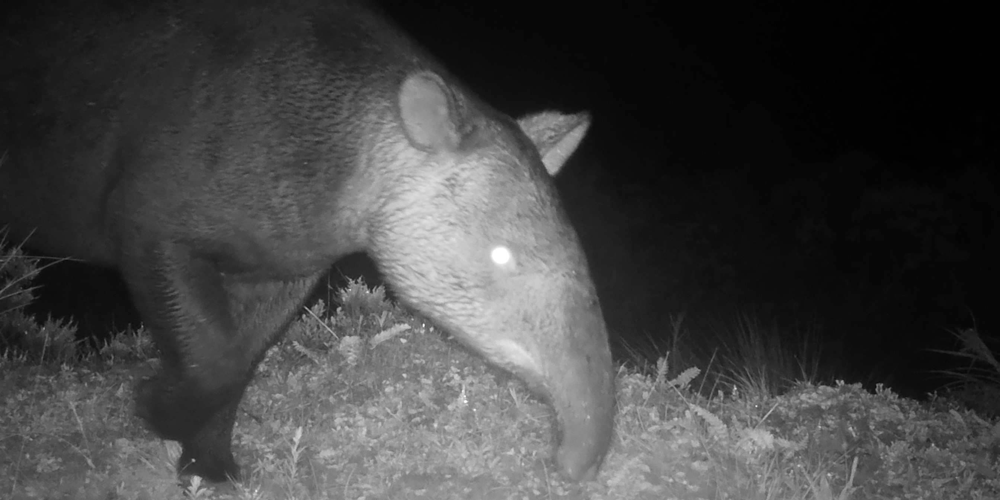
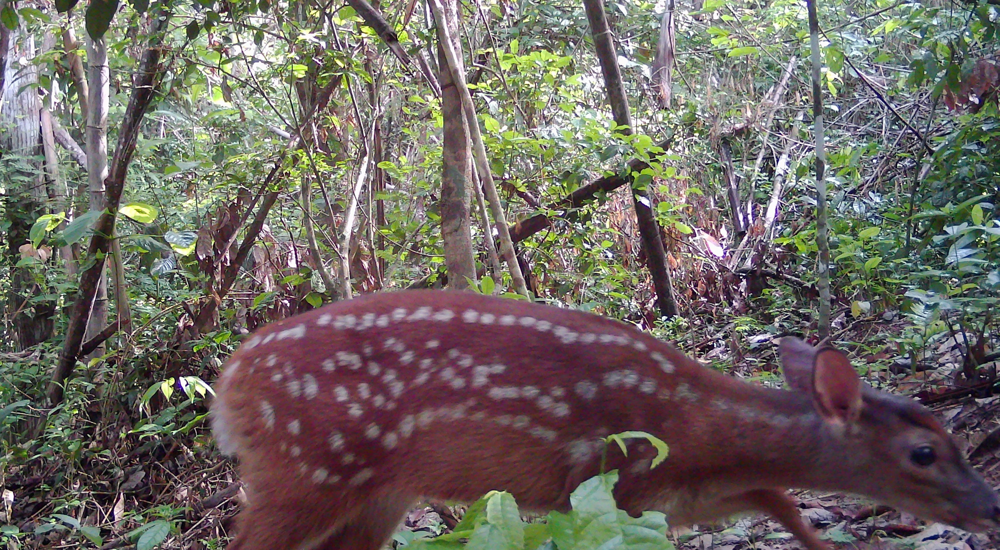
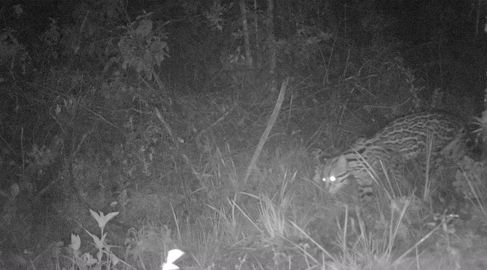
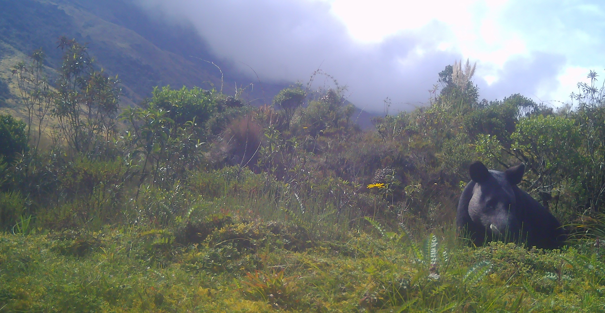
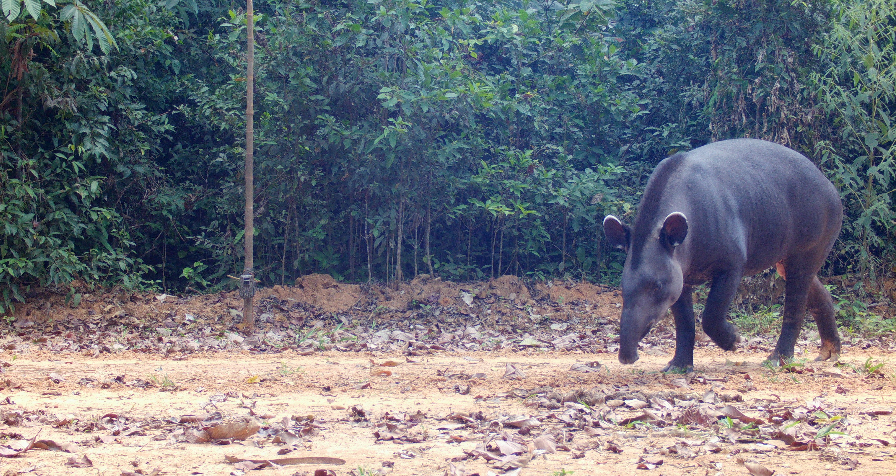
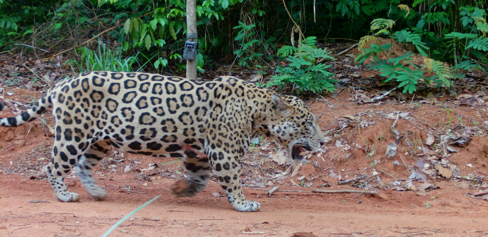
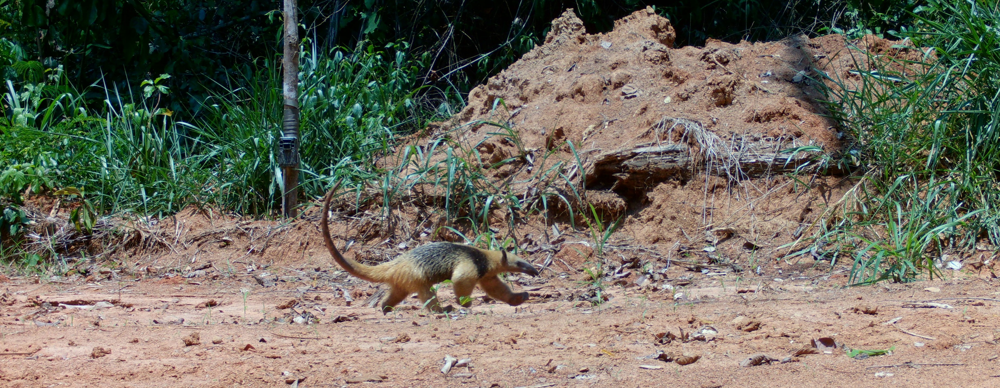
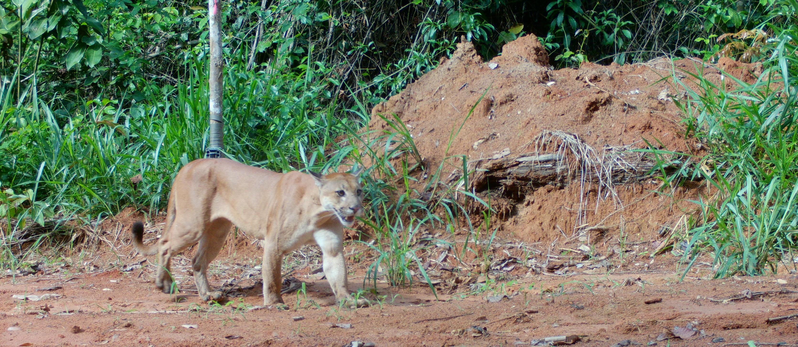
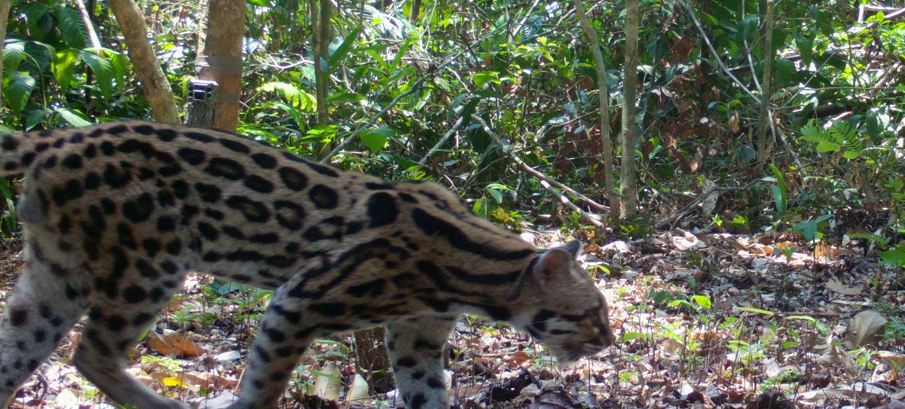
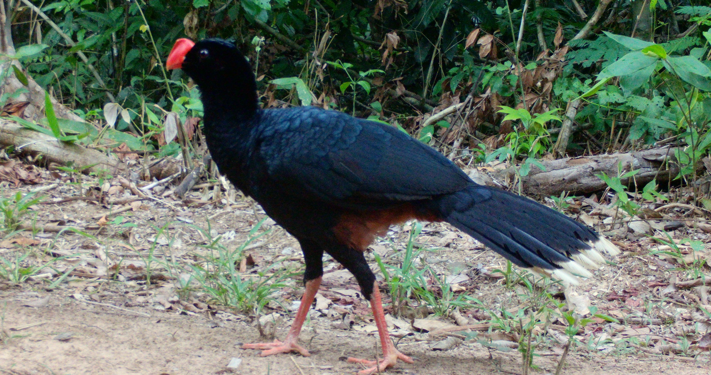
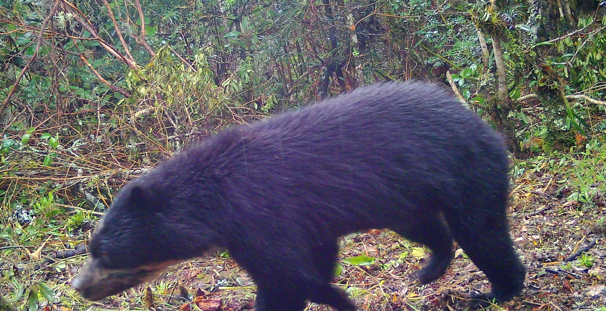
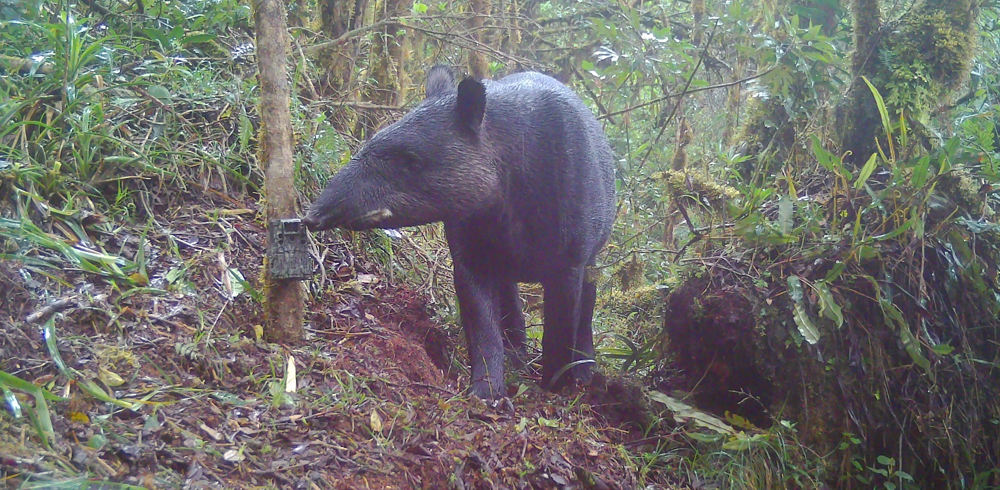
Una iniciativa que busca reunir esfuerzos de monitoreo con camaras trampa realizados por instituciones publicas, ONG, universidades, areas protegidas, comunidades, investigadores independientes y proyectos de conservacion.
Trabajamos en red con multiples actores del pais para unificar esfuerzos de monitoreo en una base de datos nacional.
Utilizamos protocolos tecnicos comunes que permiten comparar datos a nivel nacional y con otros paises Snapshot.
Cobertura en todo el territorio peruano, abarcando diversos ecosistemas: Amazonia, Andes y Costa.
Snapshot Peru se inspira en la experiencia de Snapshot USA, una iniciativa de fotomonitoreo nacional lanzada en 2019 por el Smithsonian Institution y el North Carolina Museum of Natural Sciences, que utiliza camaras trampa y protocolos estandarizados para monitorear mamiferos a gran escala en los Estados Unidos.
Desde entonces, este modelo ha demostrado el valor de generar bases de datos colaborativas, comparables y de largo plazo para entender como las poblaciones de fauna responden a cambios en el uso del suelo, la cobertura vegetal y el clima.
Snapshot Peru propone desarrollar un fotomonitoreo nacional anual y colaborativo con camaras trampa, orientado al registro de mamiferos y otra fauna terrestre en todo el pais.
"Esta informacion sera clave para identificar vacios de conocimiento, fortalecer el monitoreo de biodiversidad a escala nacional y aportar datos comparables a iniciativas globales de conservacion."